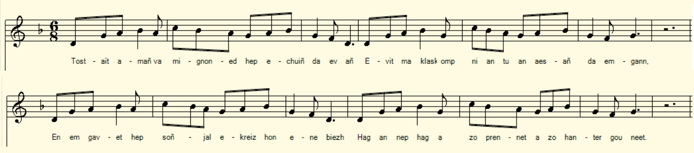
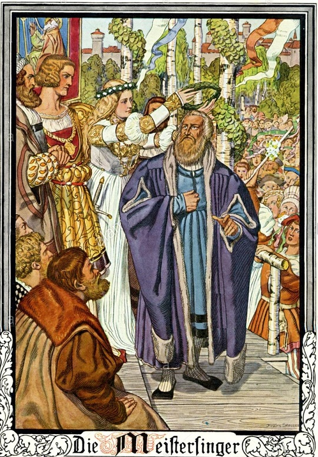

|
A propos de la mélodie: Inconnue. Cependant les vers ont la même structure que ceux du Pardon de Saint-Fiacre du Barzhaz. Ce qui conduit à choisir, à titre d'illustration, une des mélodies qui accompagnent ce chant. A propos du texte Ce chant illustre une institution qui a existé en Basse-Bretagne jusqu'à l'époque de La Villemarqué tout au moins: les chants satiriques qui servaient à mener des attaques personnelles ou collectives, comme dans le cas présent. Elle n'était d'ailleurs pas propre à cette région: Dans sa thèse de doctorat consultable en ligne, La plainte et la complainte, Mme Eva Guillorel indique que la plus ancienne chanson de Nouvelle-France dont on ait conservé les paroles est celle que composa en prison , en 1709, un nommé Jean Berger contre un apothicaire qu'il avait battu (cf. le chant Les jeunes gens de Nizon). Eva Guillorel cite également plusieurs affaires jugées en Basse Bretagne à partir de 1747. Un procès de 1773, devant la juridiction seigneuriale du Palacret a pour cause une telle chanson satirique interprétée par son auteur à la sortie des vêpres de Louargat. Le plaignant précise que "ces injures en français sont certainement des plus graves et portent à la réputation du suppliant une atteinte trop irréparable pour ne pas être poursuivie extraordinairement. En breton elles ont encore plus dénergie». (cf. ouvrage cité, vol. II, p. 348). Alors que le chant Tud yaouank Nizon visait une personne en particulier, c'est une véritable guerre en chanson entre deux clans à laquelle on assiste dans le présent chant. Elle oppose - Les garçons de la ville de Saint-Quay et - Les garçons d'un autre village où habitent les jeunes filles dont les gars de Saint-Quay se sont moqués dans un poème satirique. C'est le chef de cette deuxième bande, réunie dans une taverne, qui parle: le chant qu'il propose de composer doit montrer aux adversaires à quoi ressemble un bon poème. Il s'agit donc d'une joute portant sur l'habileté à manier l'art de la rime et à respecter les règles de la composition poétique. Elle fait penser à l'intrigue des Maîtres chanteurs de Richard Wagner (dont la première eut lieu le 21 juin 1868 à Munich). On remarque que la composition du chant est censée être collective et spontanée, corroborant ainsi la description que fait La Villemarqué d'une telle genèse dans le chant du Barzhaz Le temps passé. |
About the melody: Unknown. However, the lines have the same structure as those of the Bazhaz song Pardon de Saint-Fiacre . This leads to choosing, by way of illustration, one of the many melodies which accompany this song. About the text This song illustrates a custom extant in Lower Brittany at least until the time of La Villemarqué: composing satirical songs which were used to carry out personal or collective strifes, as in the present case. It was not specific to this region: in her doctoral thesis, available online, La plainte et la complainte, Ms. Eva Guillorel states that the oldest song of New France (Canada) whose lyrics have been preserved was composed in prison, in 1709, by a named Jean Berger against an apothecary he had beaten (cf. song The young people of Nizon ). Eva Guillorel also mentions several cases judged in Lower Brittany from 1747. A trial in 1773, before the seigneurial jurisdiction of Palacret, was caused by such a satirical song publicly interpreted by its author at the end of vespers at Louargat. The complainant specifies that "these insults, translated in French, are certainly most serious and apt to damage the reputation of the supplicant in too irreparable a way, not to be specifically prosecuted. But in Breton they are still more offensive" . (cf. work cited, vol. II, p. 348). While the song Tud yaouank Nizon was aimed at a particular person, a real song war carried out between two clans is featured in the present song. It opposes - Young men of the city of Saint-Quay and - Young men of another village where the young girls live, whom the Saint-Quay lads made fun of in a satirical poem. It is the leader of the second band, gathered in a tavern, who speaks: the song he proposes to compose must show their adversaries what a really good poem looks like. Therefore what is at stake is the ability to handle the art of rhyme and to comply with the rules of poetic composition. This is reminiscent of the plot of the Master singers by Richard Wagner (premiered on June 21, 1868 in Munich). We note that the composition of the song is supposed to be collective and spontaneous, thus corroborating the description that La Villemarqué makes of such a genesis in the Barzhaz song In Olden Times. |
|
BREZHONEK Contre les gas de St Ké [1] qui avaient fait une cha[n]son a propos de jeunes filles dont ils étaient jaloux ... . === 1. Tostait amañ ma mignoned, hep echuiñ da evañ Evit ma klaskomp-ni an tu, an aesañ da emgann, En-em gavet omp hep soñjal, e-kreiz hon enebiezh Hag an nep hag a zo prennet a zo hanter-gouneet. [2] 2. Ar gwarizi eo ar vammen d'eus a galz a facheri Hag ar re-mañ 'deus kemeret ul lodenn vras anezhi, Hag o-deus gouliet o eñvor, o soñjal hon distrujiñ [3] Awalach o-deus a vezhenn,o-deus evit o foanioù, 3. Hag hoc'h-eus mezvet [4] ho spered, o soñjal en ur krediñ, Souden ar pal a vo gwelet ; echu eo ar choari. 4. Ho pediñ ' ran, gwazed Sant-Ke, pa yec'h d' ober rimoù Lakait ho penn do muzuliañ, narenn, dober beskellioù Hag a vezo ho linennoù aesoc'h da disochañ Mui kaeroc'h e vo ho labour, hag aesetoch da ganañ. 5. Ar rimoù ho-peus c'hwi savet a zo rimoù bugale Mez ni a zeu d'ho iskuziñ, pa ne ouzoc'h nemete Diskleriañ reomp, e gwirionez, mar n'ouzoch uvel kentel, Gwell a ve kemer ar boan da vont da zeskiñ tevel. [5] 6. Komañs a ra da fredoniñ [6] araok an nevez amzer, Lakait evezh n'ho kanaouenn, na ve deoc'h an dra re ger, Na dleer kammed re abred, d'en-em laouenekaat An nep a c'hoarzh an diwezhañ, a larer a ra gwellañ. 7. O pebezh a dle en ober, dle 'n ober eo hoc'h hini! Ne ouzoch nemet kaketal hep kammed dont da veuliñ. C'hwi a dlefot lakaat evezh ha dont neuze da zoñjal, Pegement a vez a daeroù, oc'h gwelloc'h vit an dud all, 8. Ar pezh a zo bet dhoch kiriek da ober kement a drouz Ez eo mhoch-eus ar vadelezh da vont war varch atav jalous [7] Rak en-em derchel war e c'hein, a larer, a vez diaes Disunvan e vez peurvuiañ pa zeuer dhen marchegezh. (o zeir war e c'hein) Au crayon entre les lignes: 8b. Deuet a-gement oc'h gwelloc'h-gwellañ kement da drouzañ, Da bignat diwar [?] am oa [incert.] ______________________________________________ Komodite! [8] Sorchennet (sic) choazh d'eus ar vont 'maes Hag eñ aet da gomodite : - Direson e renkont be(z)añ Pa reont hen servij gantañ. Ret zo dija. Met ur bladed Diwar-benn ar gomodite! Choazh e-meur goasañ da ve(z)añ Ha pa vezo ret d'he skarzhañ, Pep hini an amezeien En-do c'hoant da gaout e lodenn. - ______ KLT gant Christian Souchon (c) 2021 |
TRADUCTION FRANCAISE p. 57 Contre les gars de Saint-Quay [1] qui avaient fait une chanson a propos de jeunes filles dont ils étaient jaloux ... [C'est un ami des jeunes filles qui parle] === 1. Sans reposer vos verres, mes amis approchez! Cette pénible affaire, cherchons à la régler! Plus unis qu'on ne pense, face à l'hostilité: Les gens aux mercenaires ne se fient qu'à moitié! [2] 2. La jalousie est source de bien des zizanies C'est ce qu'amplement prouve cette clique ennemie Qui prétendant nous nuire [3], ruinera son renom. La honte est le salaire qu'ils en retireront. 3. S'abandonnant aux songes, ils se sont s'enivrés, [4] Voici la fin du livre: les pages ont tourné: 4. Lorsque l'on fait des rimes, sachez, gars de Saint-Quay, Qu'on n'atteint au sublime qu'en comptant bien les pieds, Trouver des assonnances devient un jeu, vraiment Et avec plus d'aisance, sera chanté le chant. 5. Si vous faites des rimes indignes des enfants C'est que là se limite votre piètre talent Vous dire comment faire, bien sûr, nous le pourrions. Mais apprendre à vous taire: c'est notre humble leçon. [5] 6. Que celui qui fredonne [6] dès avant le printemps Veille à ce qu'il ne paye trop cher son joyeux chant, Célébrer un triomphe trop tôt, nul ne devrait Rira bien, dit l'adage, qui rira le dernier. 7. C'est une lourde faute que la vôtre: Surtout Avares de louanges, critiques avant tout, Jamais ne prenez garde, jamais vous ne songez A ces amères larmes que vous faites couler. 8. A faire ce tapage qui donc vous a conduits? La jalousie, je gage, la jalousie pardi! [7] C'est un cheval farouche que l'on peine à monter Engendrant la discorde parmi les cavaliers. (Quand sur son dos chevauchent à trois les cavaliers) Au crayon entre les lignes: 8b. Tous autant que vous êtes, criant à qui mieux mieux, Pour monter sur la bête, [O quel vacarme affreux!] ______________________________________________ Commodités! [8] En sortant à peine torché Il revient des commodités ; - Il faut à coup sûr être fou Pour faire usage de ce trou. Déjà sans cette assiétée L'installation était bouchée. La chose ne fait qu"empirer Il va falloir la vidanger!" A quoi chacun de nos voisins Est prié de prêter la main! - ______ Traduction Ch. Souchon (c) 2021 |
ENGLISH TRANSLATION p. 57 Against the lads of Saint-Quay [1] who made a song about lasses they were jealous of ... [It's a friend of the young girls who speaks] === 1. With cheerful glasses in your fists, come friends, don't go away! We 'll seek the easiest way for us to carry the day! We are united being challenged by bad hostility: While people only half trust a hired mercenary [2] 2. Jealousy here below oft is a bone of contention This crew of enemies will not deny this assertion Who while they're hatching to harm us [3], just injure their repute. No salary whatever will they get, and shame to boot 3. Abandoning themselves to dreams, they're intoxicated, [4] But the race has come to an end; they're eliminated 4. If you made up your minds to rhyme, now learn, lads of Saint-Quay, That to make poems sublime, you should count the feet exactly, Then finding fine assonances will be but children's game, The song will easily be sung, get everyone's acclaim 5. Your rhymes, painstakingly devised, children find unworthy For it you have an excuse: it's your own minds' boundary Tell you how to amend your style we could, but we refrain Learn to shut up: from this lesson. there's more profit to gain. [5] 6. Crooning whoever starts [6] before the first buds of the spring Should see to it he doesn't pay too much for trespassing When celebrating triumph too soon you will be miscast As the old saying goes, laughs best, whoever will laugh last. 7. A serious sin by action you committed, serious sin With praise you always were stingy, but swift at fault finding , Earnestly you should consider, for a while think ahead Of all the bitter tears by your fault caused to be shed. 8. We wonder who has prompted you to make ado and noise? Was it the horse jealousy [7] whom you rode, though not well-poised ! Jealousy is a fierce horse that many would seek to ride It brings among the riders discord and it ruins their pride (Above all when three riders at a time on its back ride) In pencil between the lines: 8b. The lot of you have gathered here, and you cry out your fill, 'Cause you want to get on the beast, [...] ______________________________________________ Amenities! [8] Still wiping his naked bottom, Back from the latrine there he comes. - One has to be crazy for sure To go there: It's full of manure. Even before I "paid my dime" The device overflowed with grime. And things are getting worse and worse This devilish thing must be drained! I appeal to all our neighbours They're requested to lend a hand! - ______ Translated by Ch. Souchon (c) 2021 |
|
[1] Saint Quay: Faute d'indications supplémentaires, je supposais que, dans le manuscrit, "Sant Ke" se rapporte soit à une ville du Goélo, Saint-Quay-Portrieux, entre Saint-Brieuc et Paimpol, soit à une cité du Trégor, Saint-Quay-Perros entre Perros-Guirec et Lannion. Un savant lecteur m'a fait remarquer que la première hypothèse n'est guère probable: on parle français à Saint-Quay-Portieux. "En revanche, il y a un hameau à Plelo du nom de Saint-Quay avec chapelle, qui était bretonnant sur cette commune également gallèse." Le "Ke" en question, aussi appelé "Keenan" et surnommé "Kolodoc'h", est un de ces nombreux ermites venus d'outre-Manche dans une auge de pierre. Il débarqua, dit-on, à Kertugal (ancien nom de Saint-Quay-Portrieux) où des lavandières, le prenant pour un démon, le fouettèrenr avec des branches de genêt. Le saint homme fit jaillir une source où il guérit ses plaies, avant d'aller se reposer sous une énorme ronce. Si la fontaine Saint-Quay existe encore, la chapelle ND de la Ronce, édifiée à l'emplacement de ladite ronce, fut détruite en 1875. Il ne faut pas la confondre avec son homonyme, la "chapelle perchée" de Caumont dans l'Eure, ni avec l'église paroissiale de Saint-Quay-Portrieux qui abrite une belle statue polychrome de ND de la Ronce (15ème s.). [2] Acheté - A moitié gagné: Le texte breton: "En-em gavet omp hep soñjal, e-kreiz hon enebiezh Hag an nep hag a zo prennet a zo hanter-gouneet. " Signifie mot à mot "Nous nous sommes retrouvés [ensemble] sans le vouloir du fait d'ennemis communs (enebiezh) Celui qui est stipendié (prennet) n'est qu'à-moitié gagné à une cause." =Nous sommes solidement unis par le ressentiment contre ceux qui se moquent de nos amies, plus solidement que si nous étions des mercenaires. lesquels sont rarement convaincus de la justesse d'une cause qu'ils défendent pour de l'argent. [3] Hon distrujiñ: "Nous détruire". La transcription du CRBC est "hi distrujiñ" (la détruire). Mais on ne voit pas à quoi rattacher ce "la". En revanche 'hon" (nous) serait justifié: Les garçons du village sont solidaires des filles visées par les moqueries des gars de Saint-Quay. On aimerait connaître la teneur de ce texte satirique qualifié ici de "destructeur". [4] Mezvet: (enivré): Les gars de Saint-Quay, affirme le poète de la taverne, tout à l'excitation de composer des vers, ont oublié que les mots peuvent blesser: il s'agit dentousiasme poétique mal placé. Ils ont dépassé les bornes. La sanction va tomber: ce sera le poème des garçons du village, bien meilleur que celui des gars de Saint-Quay. Le texte breton dit: Souden ar pal a zo gwelet: echu eo ar c'hoari: Soudain le but (pal) est en vue, la partie (c'hoari) est terminée. [5] Strophes 4 et 5: Critique du chant composé par les gars de Saint-Quay pour se moquer des filles du village. Celles-ci ne sont pas présentes dans la taverne. Le chant des ennemis est si mauvais que des enfants, qui pourraient faire bien mieux, en auraient honte. [6] Fredoniñ(fredonner): La strophe 6 signifie mot à mot : « Ils commencent à fredonner avant l'arrivée du printemps. Prenez garde que vous n'ayez à payer trop cher votre chant On ne doit jamais se réjouir trop tôt Et comme'on dit: Rira bien qui rira le dernier!" Le chant des gars de Saint-Quay contient des formules satiriques qu'ils estiment imparables et il proclame leur victoire . Mais le présent chant des amis des jeunes filles est bien supérieur et ceux de Saint Quay seront déconsidérés. Ils auront donc crié victoire trop tôt (comme s 'ils avaient chanté un chant joyeux en plein hiver).Ils ont outrepassé les règles de la prudence. [7] "War varc'h jalous" Outre le "Cheval d'orgueil" (Marc'h al lorc'h) de Pierre-Jakez Hélias, y aurait-il en Basse-Bretagne un "Cheval de la jalousie". Il ne semble pas, Mais le mot "marc'h" (cheval) a donné l'adjectif "marc'hus" qui signifie "jaloux". C'est la jalousie qui a inspiré aux gars de Saint-Quay le poème qui fait pleurer les jeunes filles. [8] Komodite: Ce petit poème qui déborde de sel...attique n'a certainement rien à voir avec le précédent, même s'il partage avec lui la page 58. Il n'en est séparé que par un trait. Il est noté sans rature ni surcharg,e dans un espace proportionné à sa longueur que le collecteur semblait donc connaître d'avance. La Villemarqué avait déjà abordé le domaine de la scatologie, page 19 du carnet 3. C'est un aspect surprenant de son éclectisme que la publication du carnet 3 nous révèle! |
 Les Maîtres chanteurs de Nuremberg Gravure de Franz Stassen (1869-1849) Quoiqu'apparentée à celle du présent poème, l'intrigue des "Maîtres chanteurs" oppose d'abord l'inspiration poétique - aussi puissante que spontanée - du chevalier Walter aux règles de composition pointilleuses et compliquées imposées par la corporation des "Meistersinger". Le ténor obtient, haut la main, le prix du concours, la main de la soprano, la belle Eva qu'il s'empresse d'accepter et le titre de Maître qu'il refuse. C'est alors que le personnage principal, le cordonnier et poète Hans Sachs intervient: "Ne méprisez pas les maîtres!" C'est en effet parce qu'il a accepté de brider sa liberté dinspiration pour se laisser guider par les règles de la tradition des Maîtres Chanteurs que lui a révélées Hans Sachs dont il sera le continuateur, que le jeune poète exalté a remporté son éclatant succès. Ce qui est au centre de cet ouvrage, ce sont les rapports entre tradition et création, entre passé et modernité. Ne serait-ce pas, toutes proportions gardées, un antagonisme de ce genre qui serait le ressort de la guerre des chansons que décrit la gwerz "Les gars de Saint Quay"? Although related to that of the present poem, the plot of the "Master singers" first opposes the poetic inspiration - as powerful as it is spontaneous- of the knight Walter to the punctilious and intricated rules of composition imposed by the corporation of the "Meistersingers". The tenor wins hands down the prize of the competition, the hand of the soprano, the beautiful Eva that he hastens to accept and the title of Master that he refuses. Then the main character, shoemaker and poet Hans Sachs intervenes: "Do not despise the masters!" It is, indeed, because he has accepted to abandon his freedom of inspiration to let himself be guided by the traditional rules of the Master Singers revealed to him by Hans Sachs, of whom he will be the continuator, that the young exalted poet has achieved its resounding success. What is at the center of this work is the relationship between tradition and creation, and between past and modernity. All things considered, is not an antagonism of this kind the ultimate springboard in the song war described by the gwerz "The Lads of Saint Quay"? |
[1] Saint Quay: Failing to have additional information, I had assumed that, in the manuscript, "Sant Ke" refers either to a town in Goélo, Saint-Quay-Portrieux, between Saint-Brieuc and Paimpol, or to a Trégor neighbourhood, Saint-Quay-Perros between Perros-Guirec and Lannion. A learned reader pointed out to me that the first hypothesis is hardly probable: French is spoken in Saint-Quay-Portieux. "But, there is a Breton-speaking hamlet adjoining Plelo town. It is called Saint-Quay with a chapel of that ilk. Plelo itself is "Gallese" (situated in the Romance-speaking area)." Saint "Ke", also called "Keenan" and nicknamed "Kolodoc'h", was one of the many hermits who came from across the Channel in a stone trough. He is said to have landed at Kertugal (former name of Saint-Quay-Portrieux) where washerwomen, taking him for a demon, whipped him with broom branches. The holy man had a miraculous spring gush out to heal his wounds, before he went and rested under an enormous bramble bush. If the Saint-Quay fountain still exists, the ND de la Ronce (Our Lady of the Bramble) chapel, built on the site of the said bramble, was demolished in 1875. It should not be confused with its Norman namesake, the "perched chapel" at Caumont'sur-Eure, nor with the parish church of Saint-Quay-Portrieux which houses a beautiful polychrome statue of ND de la Ronce (15th century). [2] Hired, half-trust: The Breton text: En-em gavet omp hep soñjal, e-kreiz hon enebiezh Hag an nep hag a zo prennet a zo hanter-gouneet. means We teamed together unpurposedly because of our common enemies whereas people who are hired (prennet) often are only half won (hanter-gounezet) to the cause they are supposed to defend." In other words; We are firmly united in resentment against those who make fun of our friends, more firmly than if we were mercenaries. who are seldom convinced of the rightness of the cause they defend for money. [3] Hon distrujiñ: Destroy us. The transcription by CRBC is "hi distrujiñ" (destroy her). But we fail to see what this "her" could refer to. Whereas "hon" (us) would make sense: The boys of the village stand in solidarity with the girls targeted by the mockery of the Saint-Quay lads.. We really would like to know the content of a satirical text dubbed here as" destructive". [4] "Mezvet" (intoxicated): the Saint-Quay lads, so say the poet of the tavern, due to the excitement of composing verses, have forgotten that words can hurt: that's what they call (misplaced) Poetic enthusiasm. But in doing so they have crossed the line. The sanction will fall: it will be the poem composed by the village lads, sure to be much better than that of the Saint-Quay lads. The Breton text states: Souden ar pal a zo gwelet: echu eo ar c'hoari: Suddenly the goal (pal) is in sight, the game (c'hoari) is over. [5] Strophes 4 and 5: Criticism of the song composed by the Saint-Quay lads to make fun of the village girls. These girls are not present in the tavern. The "Saint-Quay song" is so bad that children, not only could do much better, but also would be ashamed of it. [6] Fredoniñ" (crooning): Stanza 6 begins means word for word: You start (joyously) humming before spring comes. Take care that you don't have to pay too much for your singing One should never rejoice too soon: Laughs best, as the saying goes, who laughs last." The song of the Saint-Quay lads contains satirical witticisms that they deem overwhelming and proclaims their victory. But the present song of the young girls' friends is far superior and the Saint Quay lads are sure to be be discredited. So they cried victory too soon (as if they had sung a happy spring song in the middle of winter). In doing so they have ignored (trespassed) the rules of prudence. [7] "War varc'h jalous" Besides the "Horse of pride" (Marc'h al lorc'h), the title of a famous chronicle by Pierre-Jakez Hélias, was there a " Horse of jealousy" in Lower Brittany? Very likely not, But the word "marc'h" (horse) gave the adjective "marc'hus" which means "jealous". It is jealousy that prompted the Saint-Quay men to write the poem that made the young girls cry. [8] Komodite : This little poem overflowing with ... Attic salt certainly has nothing to do with the previous one, even if it shares page 58 with it. separated only by a line. It is noted without erasure or overload, in a space exactly apportioned to its length that the collector therefore seemed to know in advance. La Villemarqué had already entered the field of scatology, page 19 of notebook 3. It is another surprising aspect of his eclecticism that Notebook 3 revealed to us! |